Image generation is inherently stochastic: the same prompt can produce visibly different results each time. bananarama lets you control this with two YAML fields:
-
n: generate multiple images from the same prompt. -
seed: pin the random seed for more reproducible output.
No seed
Without a seed, each image is generated independently and you’ll see meaningful variation in composition, color, and detail.
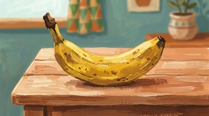
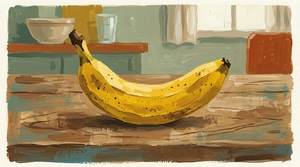
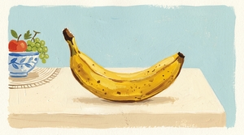
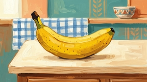
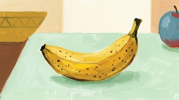
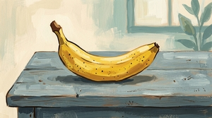
Setting a seed
Setting a seed encourages the model to produce more consistent output. There’s much less variation between images compared to the unseeded set, event though results are not perfectly identical.
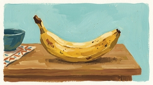
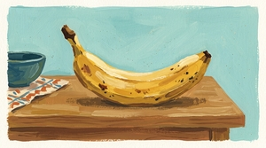
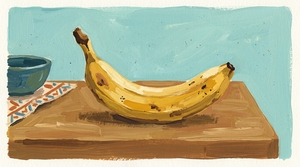
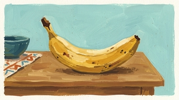
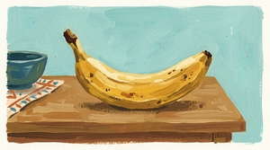
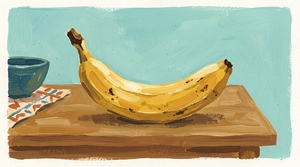
A different seed value produces a different but again more consistent set of images. Comparing this set with seed A shows that the seed affects the specific output, not just the consistency.
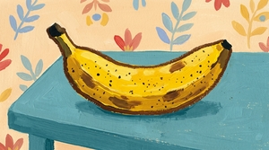
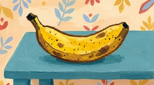
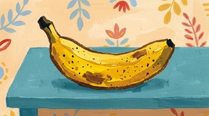
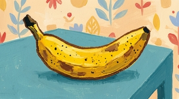
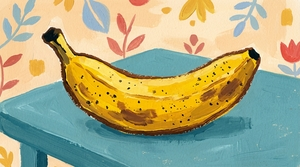
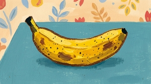
Unfortunately there’s no way to determine what seed gemini uses if you don’t specify one, so you can’t reproduce unseeded results. If you want to be able to reproduce a specific image, you have to set a seed from the start.